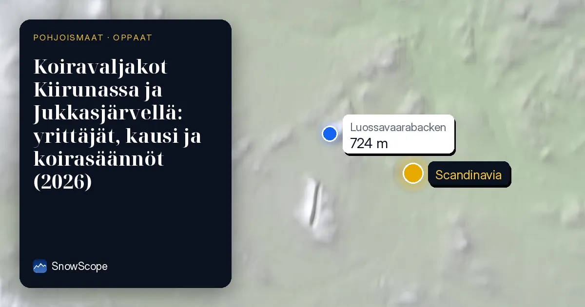

Koiravaljakot Kiirunassa ja Jukkasjärvellä: yrittäjät, kausi ja koirasäännöt (2026)
Marraskuun alussa lunta tuli Kirjunaan ja sen alapuolella oleviin laaksoihin lähes ollenkaan. 13. marraskuuta kaupungin säätasolla mitattiin 0 cm, samoin kuin Jukkasjärvellä itään ja Esrangella etelään. Kohti Norjan rajaa Katterjåkkiin saakka maassa oli 9 cm. Koiravaljakon ajon suunnitteleville on selvä sanoma: soita operaattorille kysyäksesi, ajetaanko, koska useimmat tarvitsevat lumipedin radoilleen.
Katso kohteen Scandinavia lumiennuste reaaliajassa SnowScope-sovelluksessaLumensyvyys, puuterihälytykset ja 3D-kartta, ilmaiseksi.

Milloin koiravaljakon kausi alkaa täällä
Useat Kirjunan lähellä olevat operaattorit tavoittelevat kauden avaamista marraskuun puolivälissä, mutta lumensyvyys on tärkeämpi kuin kalenteri. Active Lapland tarjoaa noin 13 km:n aamuretkea 1800 SEK henkilöltä, pidempien retken kanssa voit ohjata omaa joukkuettasi. Kalixforsbronilla sijaitseva Kiruna Husky sanoo retkinä toimivan joulukuusta maaliskuuhun, kauden ikkuna on auki marraskuun puolivälissä huhtikuun puoliväliin. Kiruna Sleddog Tours ajaa päivittäin noin 2,5 tunnin retkea. Arctic Dogsled Adventures tarjoaa noin 4,5 tunnin kokonaispäivän retkea, joka sisältää kuljetukset, joissa ajat kolmen tai neljän koiran joukkuetta.
Koska radoilla on nyt enimmäkseen paljakolla, varhaisia varauksia seuraa usein pyöräkärryt kelkkojen sijaan tai lyhyempiä silmukoita, jotka hyödyntävät lumilaikuja. Marraskuun edetessä ja kylmän asettautuessa, lumi todennäköisesti kasautuu korkeammalle ja metsään. Kysy valitsemaltasi operaattorilta, mitä tapahtuu, jos lunta ei ole saapunut valitsemallasi päivällä.
Hyvin lyhyt päivänvalo muokkaa retken aikataulua
Kirjuna sijaitsee kauas pohjoisessa ja marraskuun valo katoaa nopeasti. 15. marraskuuta päivä kestää noin 5 tuntia; 30. marraskuuta se on alle 3 tuntia. 11. joulukuusta alkaen aurinko ei nouse horisontin yläpuolelle ollenkaan ennen puoliväliin tammikuuta. Retken operaattorit ajoittavat aamuretkensä päivän kirkkaimpaan osaan turvallisuuden ja nautinnon vuoksi.
Jos aiot tutkia kävellen tai ottaa oman koiran kävelylle, ota mukaan päälamppu ja käytä heijastinta. Kylmä jokien laaksoissa tässä voi olla terävää, vaikka ilman lämpötila ei olisi äärimmäinen, joten ota lämpimät, vedenpitävät saappaat.
Koirien säännöt Kirjunassa ja poronhoitomaalla
Ruotsin kansalliset lait sanovat koirat eivät saa juosta vapaalla, missä villieläimet asuvat 1. maaliskuusta 20. elokuuhun. Näiden kuukausien ulkopuolella sääntöä ei sovelleta, mutta talvi tuo muita sääntöjä. Koko Kirjunan alue on poronhoitomaa, mikä tarkoittaa, että koirat on pidettävä kytkettyinä laumojen lähellä ja kaikilla poronhoitoheti. Kansalliset puistot ja luonnonsuojelualueet vaativat kytkeä aina.
Kaksi Kirjunan lähellä olevaa puistoa on rajoitettu pääsy. Abiskoon ja Vadvetjåkkan kansallispuistoissa koirat ovat sallitut vain 1. tammikuusta 30. huhtikuuhun, ja aina kytkettynä. Abiskossa kytkettyä koiraa voi kävelee teitä ja merkittyjä polkuja ympäri vuoden ja käyttää aluetta kävijäkeskuksen ympärillä. Kirjunan kaupungin sisällä paikalliset säännöt vaativat kytkentää kaikilla rakennetuilla alueilla ja merkittyillä poluilla. Kunnan hiotut hiihtöradat ovat koirille kiellettyjä talvella, ellei merkki salli niitä. Kytketyn koiran puisto seisoo Kyrkogatan kadulla vapaasti leikkimiselle.
Mitä ottaa mukaan ja mitä odottaa
Alkukauden lumi täällä on yleensä ohut ja läikkinen. Kivet, ruoho ja polun maa voivat näkyä läpi. Oppaat ovat tottuneet tähän ja mukauttavat reitin, mutta odota lyhyempiä matkoja ja enemmän pysähdyksiä kuin keskitalven retki tarjoaisi. Monet operaattorit kantavat vara-peittoja tai vaatteita pitääkseen koirat lämpimissä pysähdysten aikana.
Jokien laaksot Jukkasjärven ympärillä pysyvät kylmempinä kuin ilman lämpötila vihjaa, varsinkin varhain aamulla. Vaikka ennuste näyttäisi lievältä, ota mukaansa ylimääräinen kerros ja tuulenpitoivat hanskat. Kuuman juoman termospullo on hyvä idea.
Vinkkejä laskijoille
- Ota yhteyttä operaattoriisi vähintään viikkoa ennen vahvistaaksesi lumiolosuhteet suunnitellulla päivälläsi. Marraskuun alussa pyöräkärryt tai lyhyemmät reitit voivat korvata täydelliset kelkkaretkensä.
- Ota mukaan päälamppu, heijastava varustus ja lämpimät vedenpitävät saappaat. Marraskuun päivänvalo on lyhyt ja jokilaakson kylmyys on todellinen.
- Jos kävelet omaa koiraasi, pysy poissa hoituista hiihtöradoista ja pidä kytkin päällä kaikkialla, missä porot voivat olla—ne ovat yleisiä talvella Kirjunan ympärillä.
- Tarkista operaattorin kylmän sään politiikka. Jotkut eivät aja kun lämpötila putoaa alle -20 °C.
- Turvallisuuden vuoksi poronhoitomaalla, kysy paikalliselta viimeaikaisista lauman sijainneista ennen lähtöä.
Näistä luvuista
Hiihtokeskusten lumensyvyydet ovat syvin lumi keskuksen ylärinteillä näytettynä päivänä; ne ovat arvioita alueelle, eivät mittaus yhdessä pisteessä. Ennusteet voivat muuttua. Lue aina virallinen lumivyöryennuste ennen rinteiden ulkopuolelle lähtöä.
Viittaa tähän raporttiin
Tutkimukseen, opetukseen tai mediaan: luvut ja kaaviot ovat vapaasti käytettävissä CC BY 4.0 -lisenssillä tällä lähdeviitteellä.
SnowScope (2026), Koiravaljakot Kiirunassa ja Jukkasjärvellä: yrittäjät, kausi ja koirasäännöt (2026), https://snowscope.app/blog/fi/2026/11/kiruna-dog-sledding-jukkasjarvi-winter-guide-2026.html, luettu 2026-11-14
SnowScope (Atlas Labs). (2026, November 14). Koiravaljakot Kiirunassa ja Jukkasjärvellä: yrittäjät, kausi ja koirasäännöt (2026). SnowScope snow reports. https://snowscope.app/blog/fi/2026/11/kiruna-dog-sledding-jukkasjarvi-winter-guide-2026.html
BibTeX
@misc{snowscope2026kirunadogsleddingjukkasj,
author = {{SnowScope (Atlas Labs)}},
title = {Koiravaljakot Kiirunassa ja Jukkasjärvellä: yrittäjät, kausi ja koirasäännöt (2026)},
year = {2026},
month = nov,
howpublished = {\url{https://snowscope.app/blog/fi/2026/11/kiruna-dog-sledding-jukkasjarvi-winter-guide-2026.html}},
note = {Published 2026-11-14 17:39 UTC; accessed 2026-11-14}
}· CC BY 4.0 · Menetelmät, data ja työkalut →
Seuraa: Scandinavia
Ilmainen: viesti, kun uutta lunta on tulossa, ja ennuste joka aamu.